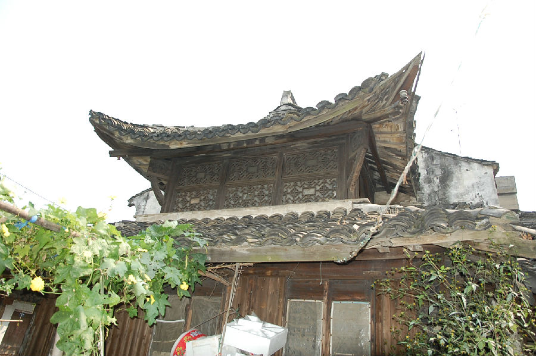

嘉兴市文物保护网 · 市级文物保护点 · 2020-11-09 · 原文

凤桥徐可老宅位于嘉兴市南湖区凤桥镇利民社区小五房13号，据形制和所有人介绍判断为清建。原有布局不明（所有人说五进），现存二进和东侧走马堂楼。南一进为一层平房，二、四进位二层楼房，二进西侧原挖有人工湖（现已填平），临湖修建重檐庑殿顶半间房，三进已改建新房。建筑均为砖木结构，梁架穿斗式，屋顶大部分为硬山顶，做工较精，梁枋、牛腿、雀替等处雕工较细致，建筑规模较大。老宅具有典型的传统江南水乡建筑特点，为研究当时当地民众的生产生活提供了很好的见证，具有较高的历史和艺术价值。2010年公布为市级文物保护点。